الحوض العظميBony Pelvis (Pelvic Girdle): Sacrum, Coccyx & Hip Bones
نظري · م01 · 7.2 دقيقةأقسام المحاضرة (10)
- عظام الحوضBones of the Pelvis
- العجز وسطحه الظهريThe Sacrum & Dorsal Surface
- السطح الحوضي للعجزPelvic Surface of the Sacrum
- العصعصThe Coccyx
- عظم الورك وتركيبهThe Hip Bone
- الحرقفةThe Ilium
- العانةThe Pubis
- الإسكThe Ischium
- الفرق بين حوض الذكر والأنثىMale vs Female Pelvis
- المظاهر الشعاعية لعظام الحوضRadiological Features
عظام الحوضBones of the Pelvis
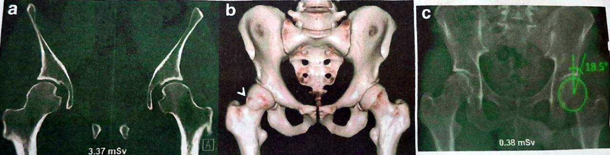
There are three bones of the pelvis: the hip bone, sacrum and coccyx. These bones connect the axial skeleton to the lower limbs, and therefore play a role in bearing the weight of the upper body. These bones also act as attachments for many muscles and ligaments within the pelvis and lower limbs.
للحوض ثلاثة عظام: عظم الورك، والعجز، والعصعص. تربط هذه العظام الهيكل العظمي المحوري بالطرفين السفليين، ولذلك لها دور في حمل وزن الجزء العلوي من الجسم. وتعمل أيضاً مواضعَ ارتكاز لكثير من العضلات والأربطة داخل الحوض وفي الطرفين السفليين.
The hip bone has three parts: the ilium, pubis and ischium. These are separated by cartilage at birth and fuse during puberty.
لعظم الورك ثلاثة أجزاء: الحرقفة، والعانة، والإسك. ويفصل بينها غضروف عند الولادة، وتلتحم في سن البلوغ.
The sacrum is located inferiorly to the spinal vertebrae, and posteriorly within the pelvis. It is formed by the fusion of five sacral vertebrae, and transmits the sacral nerve fibres of the cauda equina.
يقع العجز أسفل فقرات العمود الفقري، وفي الجهة الخلفية من الحوض. ويتكوّن من التحام خمس فقرات عجزية، ويمرّر الألياف العصبية العجزية لذنب الفرس.
The coccyx, commonly referred to as the tailbone, is the smallest of the pelvic bones, and sits inferiorly to the sacrum. It does not serve any function, but acts as a point of attachment for a few muscles and ligaments.
العصعص، ويُعرف عادةً بعظم الذنب، هو أصغر عظام الحوض، ويقع أسفل العجز. ليس له وظيفة، لكنه نقطة ارتكاز لبعض العضلات والأربطة.
العجز وسطحه الظهريThe Sacrum & Dorsal Surface
The sacrum is a large bone located at the terminal part of the vertebral canal, where it forms the posterior aspect of the pelvis.
العجز عظم كبير يقع في الجزء الطرفي من القناة الفقرية، ويكوّن الجانب الخلفي للحوض.
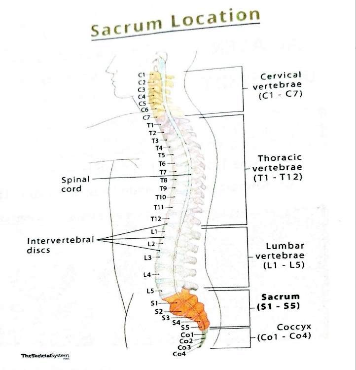
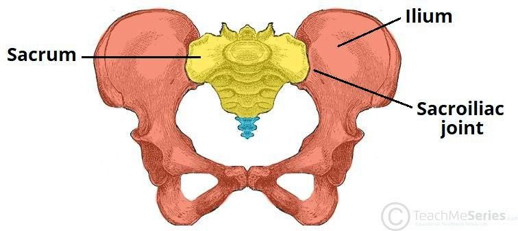
سطحا العجزSurfaces of the Sacrum
There are two surfaces of the sacrum - a coarse dorsal surface and a relatively smooth pelvic surface. When the patient is standing, the pelvic surface faces anteroinferiorly while the dorsal surface is in the posterosuperior direction.
للعجز سطحان: سطح ظهري خشن، وسطح حوضي أملس نسبياً. وعندما يقف المريض يتجه السطح الحوضي إلى الأمام والأسفل، والسطح الظهري إلى الخلف والأعلى.
السطح الظهريDorsal Surface
The dorsal surface of the sacrum is coarse and rugged. This can be attributed to the fusion of the sacral vertebrae, which give rise to three bony ridges (or crests). In the midline of the dorsal surface, there is a central ridge of bone, called the median sacral crest. It is formed by the fusion of the spinous processes of the first three sacral vertebrae.
السطح الظهري للعجز خشن ووعر، والسبب التحام الفقرات العجزية الذي ينتج عنه ثلاثة حروف عظمية (أعراف). وفي الخط الأوسط للسطح الظهري حرف عظمي مركزي يُسمّى العرف العجزي الناصف، ويتكوّن من التحام النواتئ الشوكية للفقرات العجزية الثلاث الأولى.
Incomplete fusion leaves openings that form the posterior sacral foramina.
الالتحام غير الكامل يترك فتحات تكوّن الثقوب العجزية الخلفية.
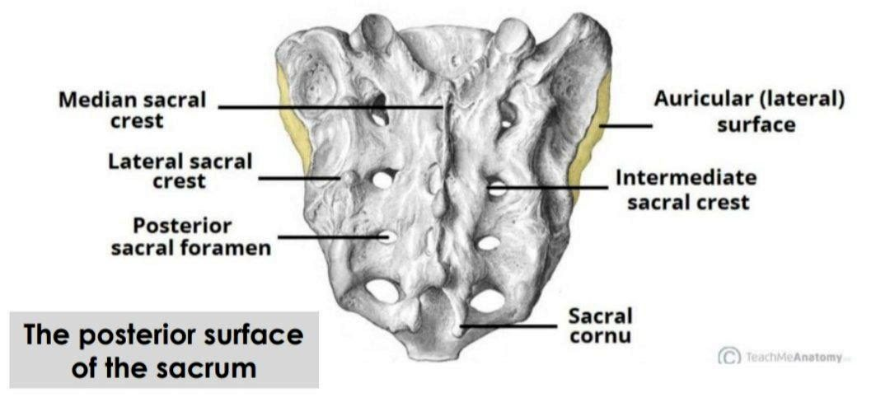
السطح الحوضي للعجزPelvic Surface of the Sacrum
The sacral promontory is continuous with:
الرعن العجزي متصل بـ:
- • Ala of sacrumجناح العجز.
- • Arcuate line of iliumالخط المقوّس للحرقفة.
- • Pecten pubisمشط العانة.
- • Pubic crestالعرف العاني.
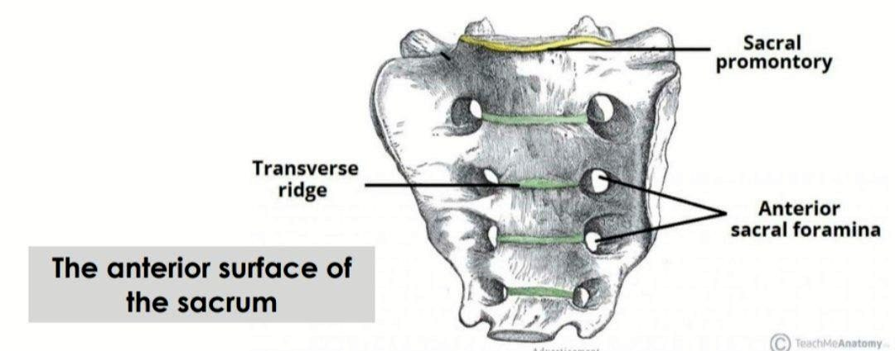
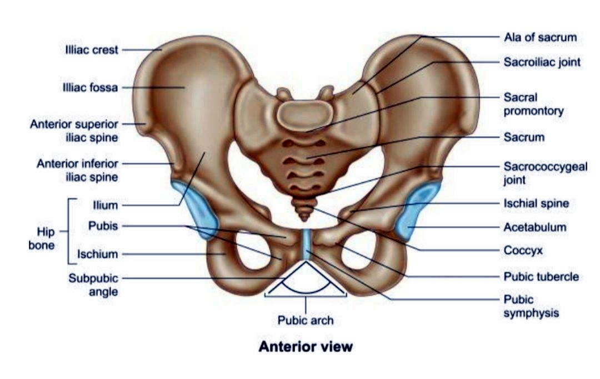
العصعصThe Coccyx
The coccyx (also known as the tailbone) is the terminal part of the vertebral column. It is comprised of four vertebrae, which fuse to produce a triangular shape.
العصعص (ويُعرف أيضاً بعظم الذنب) هو الجزء الطرفي من العمود الفقري. ويتكوّن من أربع فقرات تلتحم لتعطي شكلاً مثلثاً.
The coccyx consists of an apex, base, anterior surface, posterior surface, and two lateral surfaces.
يتكوّن العصعص من قمّة، وقاعدة، وسطح أمامي، وسطح خلفي، وسطحين جانبيين.
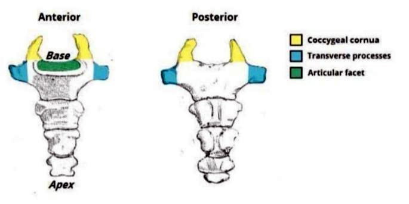
عظم الورك وتركيبهThe Hip Bone
The left and right hip bones (innominate bones, pelvic bones) are two irregularly shaped bones that form part of the pelvic girdle – the bony structure that attaches the axial skeleton to the lower limbs.
عظما الورك الأيمن والأيسر (العظمان غير المسمّيين، أو عظما الحوض) عظمان غير منتظمي الشكل، يكوّنان جزءاً من الحزام الحوضي، وهو البنية العظمية التي تربط الهيكل المحوري بالطرفين السفليين.
The hip bones have three main articulations:
لعظمي الورك ثلاثة مفاصل رئيسة:
تركيب عظم الوركComposition of the Hip Bone
The hip bone is comprised of the three parts; the ilium, pubis and ischium. Prior to puberty, the triradiate cartilage separates these parts – and fusion only begins at the age of 15-17.
يتكوّن عظم الورك من ثلاثة أجزاء: الحرقفة والعانة والإسك. وقبل البلوغ يفصل بينها الغضروف ثلاثي الشُّعَب، ولا يبدأ التحامها إلا في عمر 15–17 سنة.
Together, the ilium, pubis and ischium form a cup-shaped socket known as the acetabulum (literal meaning in Latin is 'vinegar cup'). The head of the femur articulates with the acetabulum to form the hip joint.
تكوّن الحرقفة والعانة والإسك معاً تجويفاً على شكل كوب يُسمّى الحُقّ (ومعناه الحرفي باللاتينية «كوب الخل»). ويتمفصل رأس عظم الفخذ مع الحُقّ ليكوّنا مفصل الورك.
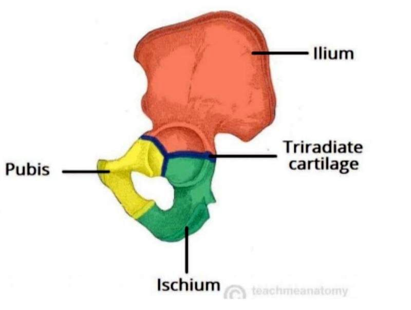
الحرقفةThe Ilium
The ilium is the widest and largest of the three parts of the hip bone, and is located superiorly. The body of the ilium forms the superior part of the acetabulum (acetabular roof). Immediately above the acetabulum, the ilium expands to form the wing (or ala).
الحرقفة أعرض أجزاء عظم الورك الثلاثة وأكبرها، وتقع في الأعلى. ويكوّن جسم الحرقفة الجزء العلوي من الحُقّ (سقف الحُقّ). وفوق الحُقّ مباشرة تتسع الحرقفة لتكوّن الجناح.
The wing of the ilium has two surfaces:
لجناح الحرقفة سطحان:
The superior margin of the wing is thickened, forming the iliac crest. It extends from the anterior superior iliac spine (ASIS) to the posterior superior iliac spine (PSIS).
الحافة العلوية للجناح سميكة، وتكوّن العرف الحرقفي، ويمتد من الشوكة الحرقفية الأمامية العلوية (ASIS) إلى الشوكة الحرقفية الخلفية العلوية (PSIS).
On the posterior aspect of the ilium there is an indentation known as the greater sciatic notch.
وعلى الجانب الخلفي للحرقفة انخفاض يُسمّى الثلمة الوركية الكبرى.
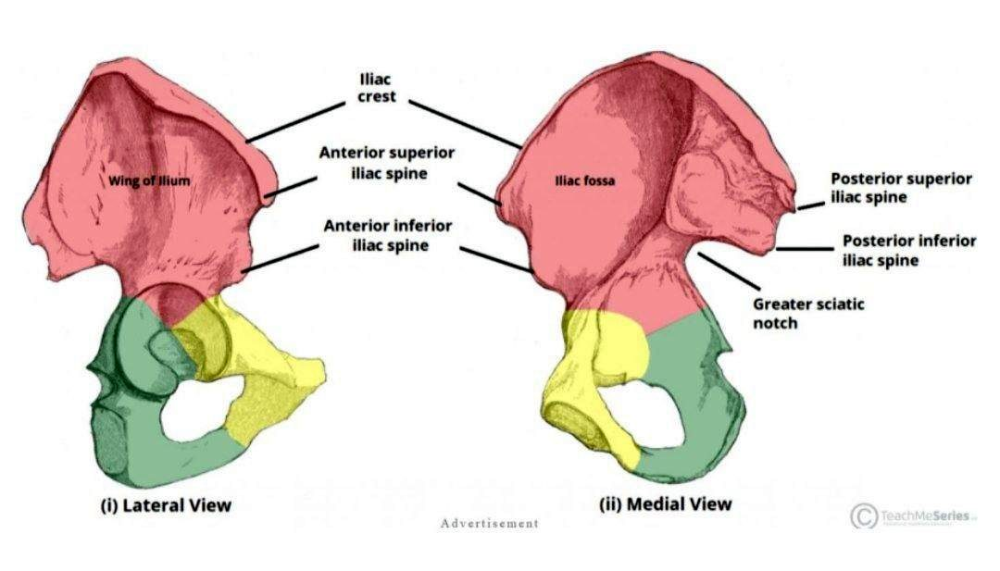
العانةThe Pubis
The pubis is the most anterior portion of the hip bone. It consists of a body, superior ramus and inferior ramus (ramus = branch).
العانة هي الجزء الأمامي الأقصى من عظم الورك. وتتكوّن من جسم، وفرع علوي، وفرع سفلي (الفرع = غصن).
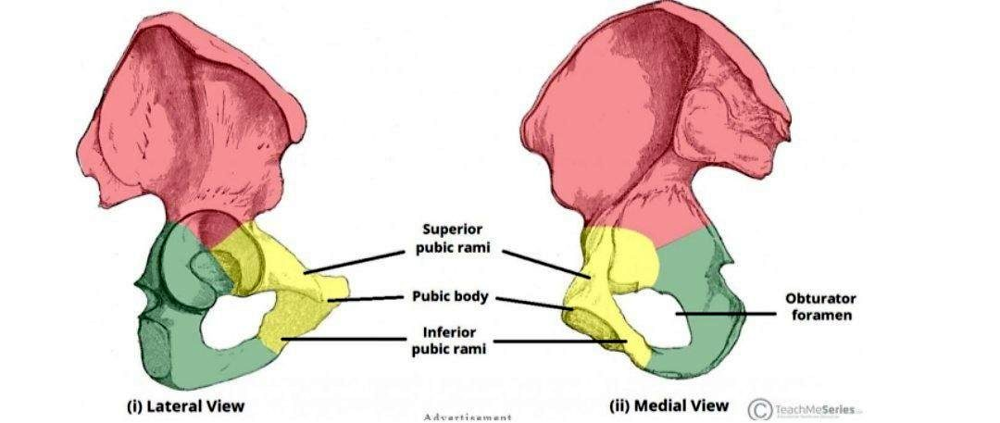
الإسكThe Ischium
The ischium forms the posteroinferior part of the hip bone. Much like the pubis, it is composed of a body, an inferior ramus and superior ramus.
يكوّن الإسك الجزء الخلفي السفلي من عظم الورك. ومثل العانة، يتكوّن من جسم، وفرع سفلي، وفرع علوي.
The inferior ischial ramus combines with the inferior pubic ramus forming the ischiopubic ramus, which encloses part of the obturator foramen. The posterorinferior aspect of the ischium forms the ischial tuberosities and when sitting, it is these tuberosities on which our body weight falls.
يتّحد الفرع الإسكي السفلي مع الفرع العاني السفلي ليكوّنا الفرع الإسكي العاني، الذي يحيط بجزء من الثقبة السدّادية. ويكوّن الجانب الخلفي السفلي للإسك الحدبتين الإسكيتين، وعليهما يقع وزن الجسم عند الجلوس.
Near the junction of the superior ramus and body is a posteromedial projection of bone; the ischial spine
قرب ملتقى الفرع العلوي بالجسم بروز عظمي خلفي إنسي، هو الشوكة الإسكية.
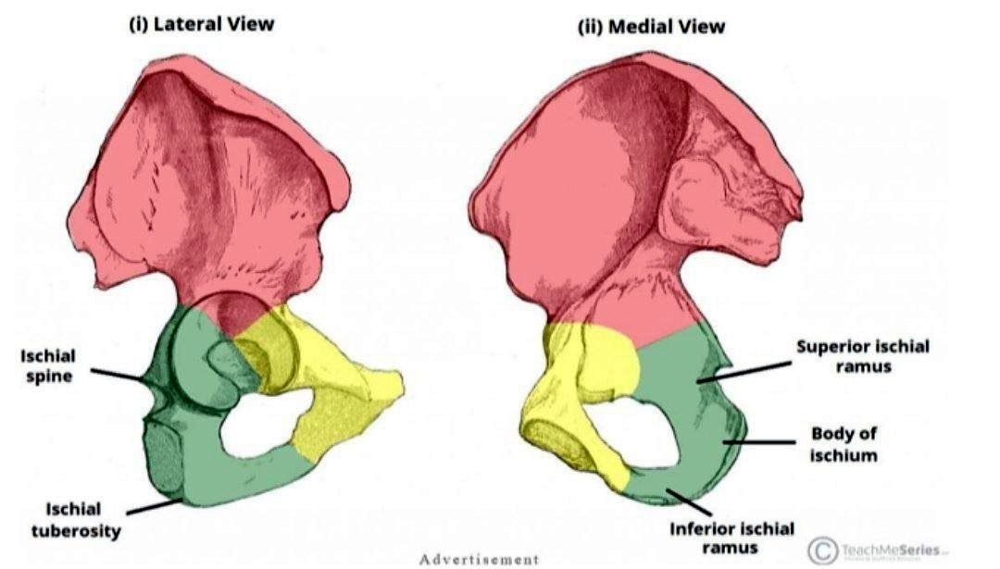
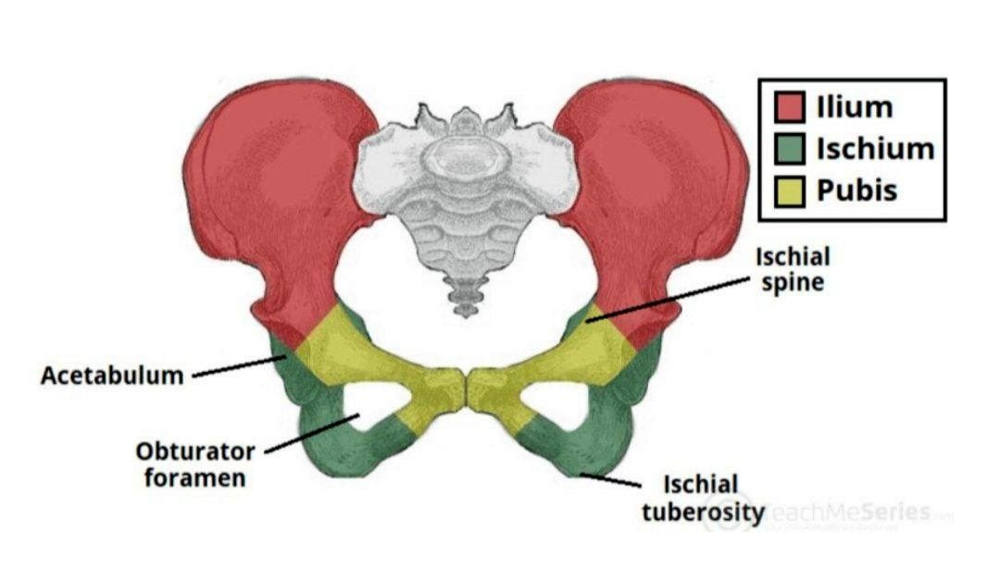
الفرق بين حوض الذكر والأنثىMale vs Female Pelvis
The female pelvis is wider, shallower, and lighter, designed for childbirth. It has a larger round opening, a wider pubic arch (over 80°), and a flexible coccyx that bends outward. The male pelvis is narrower, taller, and heavier, built for strength and movement. It has a smaller heart-shaped opening, a narrower pubic arch (less than 70°), and a rigid coccyx that points inward.
حوض الأنثى أعرض وأقل عمقاً وأخف، ومصمّم للولادة. وله فتحة دائرية أكبر، وقوس عاني أعرض (أكثر من 80 درجة)، وعصعص مرن ينحني إلى الخارج. أما حوض الذكر فأضيق وأطول وأثقل، ومبني للقوة والحركة. وله فتحة أصغر على شكل قلب، وقوس عاني أضيق (أقل من 70 درجة)، وعصعص صلب يتجه إلى الداخل.
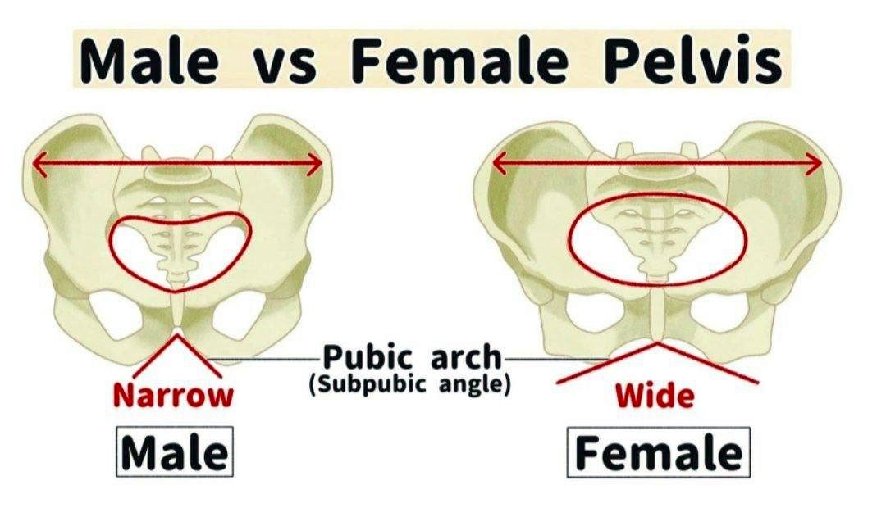
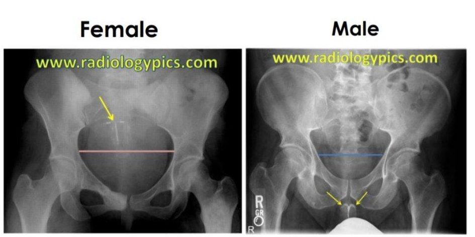
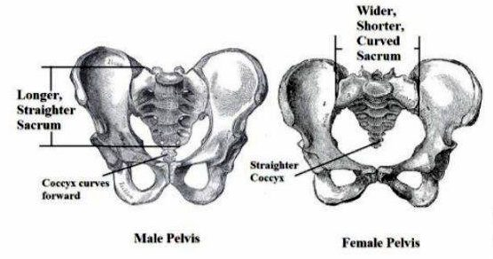
المظاهر الشعاعية لعظام الحوضRadiological Features
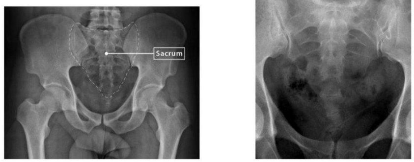
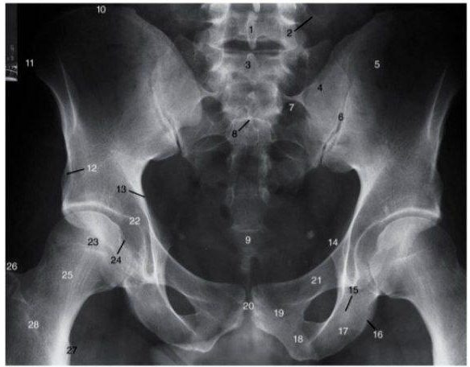
- 1. Spinous process of L5 vertebraالناتئ الشوكي للفقرة القطنية الخامسة.
- 2. Transverse process of L5 vertebraالناتئ المستعرض للفقرة القطنية الخامسة.
- 3. Spinous process of the first sacral segmentالناتئ الشوكي للقطعة العجزية الأولى.
- 4. Lateral sacral massالكتلة العجزية الوحشية.
- 5. Iliumالحرقفة.
- 6. Sacroiliac jointالمفصل العجزي الحرقفي.
- 7. Sacral foramen of S2 vertebraالثقبة العجزية للفقرة S2.
- 8. Spinous process of S3 vertebraالناتئ الشوكي للفقرة S3.
- 9. Coccyx: first segment of threeالعصعص: القطعة الأولى من ثلاث.
- 10. Iliac crestالعرف الحرقفي.
- 11. Anterior superior iliac spineالشوكة الحرقفية الأمامية العلوية.
- 12. Anterior inferior iliac spineالشوكة الحرقفية الأمامية السفلية.
- 13. Pelvic brimحافة الحوض.
- 14. Ischial spineالشوكة الإسكية.
- 15. Body of ischiumجسم الإسك.
- 16. Ischial tuberosityالحدبة الإسكية.
- 17. Ramus of ischiumفرع الإسك.
- 18. Inferior pubic ramusالفرع العاني السفلي.
- 19. Body of pubic boneجسم عظم العانة.
- 20. Pubic symphysisالارتفاق العاني.
- 21. Superior pubic ramusالفرع العاني العلوي.
- 22. Acetabulumالحُقّ.
- 23. Head of femurرأس عظم الفخذ.
- 24. Foveaالنقرة (في رأس الفخذ).
- 25. Neck of femurعنق عظم الفخذ.
- 26. Greater trochanter of femurالمدوّر الكبير لعظم الفخذ.
- 27. Lesser trochanter of femurالمدوّر الصغير لعظم الفخذ.
- 28. Intertrochanteric femurالمنطقة بين المدوّرين لعظم الفخذ.
التصوير الشعاعي للحوضPelvic radiography
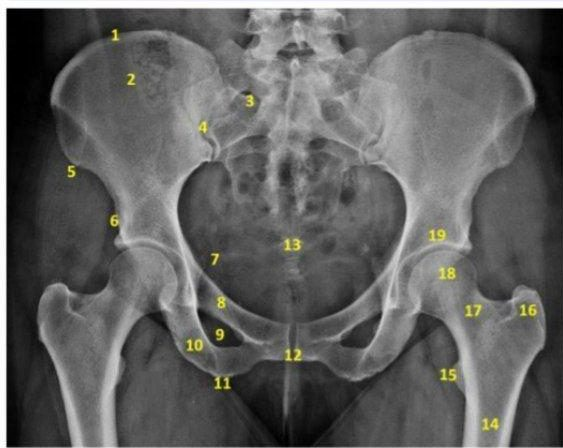
- 1. Iliac crestالعرف الحرقفي.
- 2. Iliumالحرقفة.
- 3. Anterior sacral foraminaالثقوب العجزية الأمامية.
- 4. Sacroiliac jointالمفصل العجزي الحرقفي.
- 5. Anterior superior iliac spineالشوكة الحرقفية الأمامية العلوية.
- 6. Anterior inferior iliac spineالشوكة الحرقفية الأمامية السفلية.
- 7. Ischial spineالشوكة الإسكية.
- 8. Superior pubic ramusالفرع العاني العلوي.
- 9. Obturator featuresالثقبة السدّادية.
- 10. Inferior pubic ramusالفرع العاني السفلي.
- 11. Ischial tuberosityالحدبة الإسكية.
- 12. Symphysis pubisالارتفاق العاني.
- 13. Coccyxالعصعص.
- 14. Femurعظم الفخذ.
- 15. Lesser trochanterالمدوّر الصغير.
- 16. Greater trochanterالمدوّر الكبير.
- 17. Femoral neckعنق الفخذ.
- 18. Femoral headرأس الفخذ.
- 19. Acetabulumالحُقّ.
المفراس (CT) لعظام الحوضCT of the pelvis bone
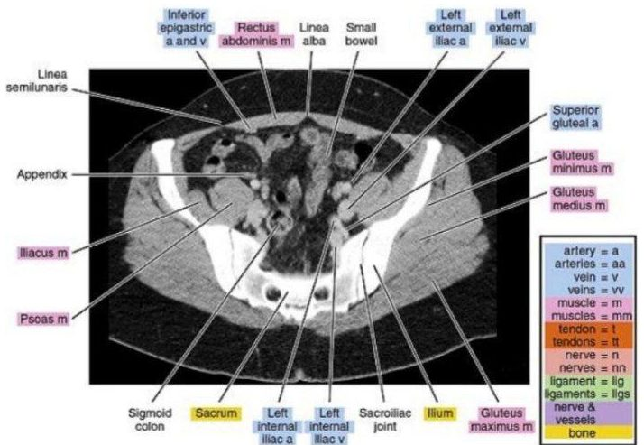
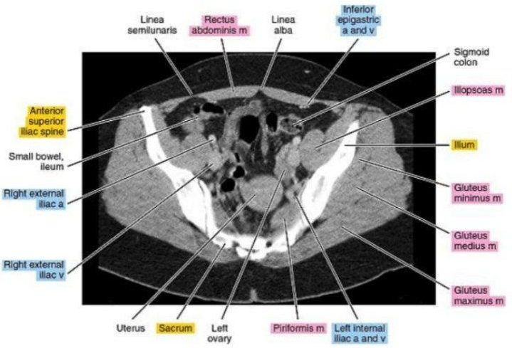
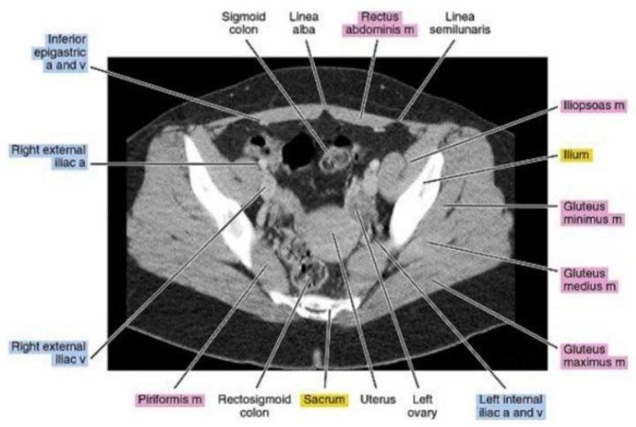
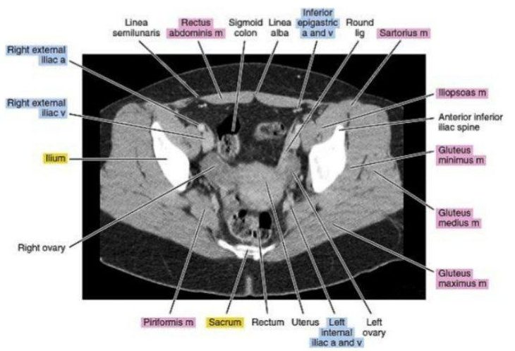
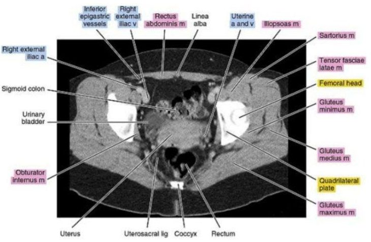
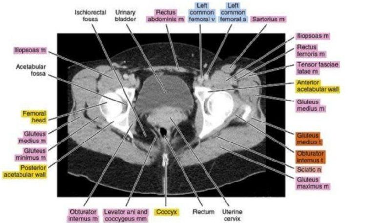
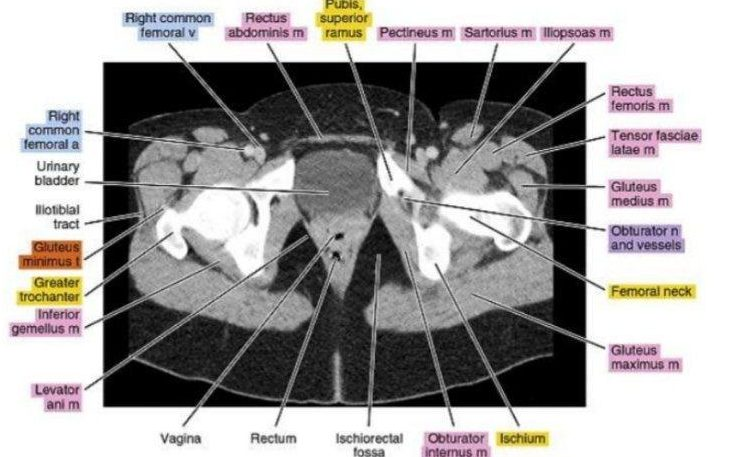
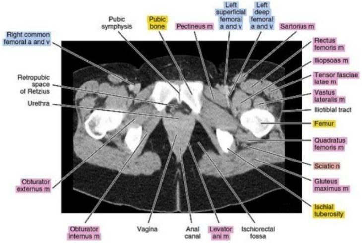
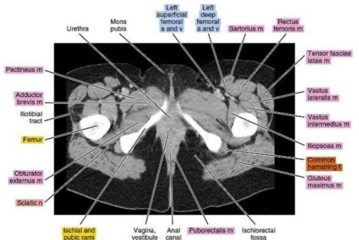
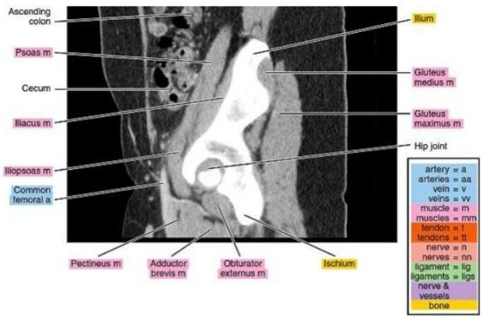
الرنين المغناطيسي (MRI) لحوض الأنثىMRI of the female pelvis
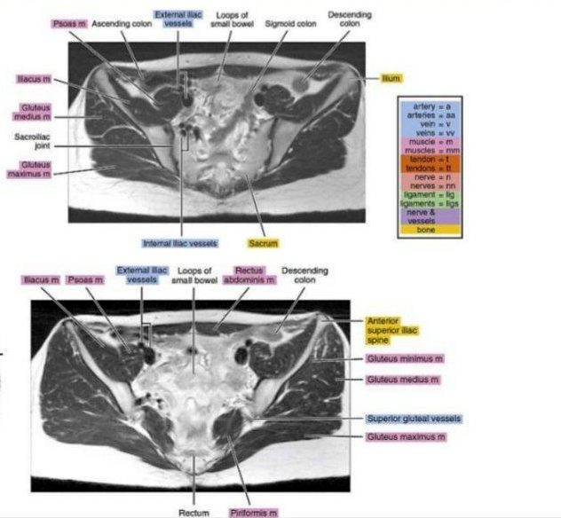
المحاضرة مسموعة
نص الأستاذ بالإنكليزي مثل الأصل · 7.2 دقيقة. اضغط أي جملة تسمعها، أو مصطلح منقّط تسمع لفظه ومعناه.
Bones of the Pelvisعظام الحوض
Bones of the Pelvis
There are three bones of the pelvis: the hip bone, sacrum and coccyx. These bones connect the axial skeleton to the lower limbs, and therefore play a role in bearing the weight of the upper body. These bones also act as attachments for many muscles and ligaments within the pelvis and lower limbs.
The hip bone has three parts: the ilium, pubis and ischium. These are separated by cartilage at birth and fuse during puberty.
The sacrum is located inferiorly to the spinal vertebrae, and posteriorly within the pelvis. It is formed by the fusion of five sacral vertebrae, and transmits the sacral nerve fibres of the cauda equina.
The coccyx, commonly referred to as the tailbone, is the smallest of the pelvic bones, and sits inferiorly to the sacrum. It does not serve any function, but acts as a point of attachment for a few muscles and ligaments.
The pelvic girdle is the ring shaped collection of these bones at the base of the spine.
The sacroiliac joint is an articulation between the ilium of the pelvis and the sacrum of the vertebral column.
The Sacrum & Dorsal Surfaceالعجز وسطحه الظهري
The Sacrum & Dorsal Surface
The sacrum is a large bone located at the terminal part of the vertebral canal, where it forms the posterior aspect of the pelvis.
Surfaces of the Sacrum
There are two surfaces of the sacrum - a coarse dorsal surface and a relatively smooth pelvic surface. When the patient is standing, the pelvic surface faces anteroinferiorly while the dorsal surface is in the posterosuperior direction.
Dorsal Surface
The dorsal surface of the sacrum is coarse and rugged. This can be attributed to the fusion of the sacral vertebrae, which give rise to three bony ridges (or crests). In the midline of the dorsal surface, there is a central ridge of bone, called the median sacral crest. It is formed by the fusion of the spinous processes of the first three sacral vertebrae.
Incomplete fusion leaves openings that form the posterior sacral foramina.
Pelvic Surface of the Sacrumالسطح الحوضي للعجز
Pelvic Surface of the Sacrum
The sacral promontory is continuous with:
Ala of sacrum
Arcuate line of ilium
Pecten pubis
Pubic crest
The Coccyxالعصعص
The Coccyx
The coccyx (also known as the tailbone) is the terminal part of the vertebral column. It is comprised of four vertebrae, which fuse to produce a triangular shape.
The coccyx consists of an apex, base, anterior surface, posterior surface, and two lateral surfaces.
The Hip Boneعظم الورك وتركيبه
The Hip Bone
The left and right hip bones (innominate bones, pelvic bones) are two irregularly shaped bones that form part of the pelvic girdle – the bony structure that attaches the axial skeleton to the lower limbs.
The hip bones have three main articulations:
Composition of the Hip Bone
The hip bone is comprised of the three parts; the ilium, pubis and ischium. Prior to puberty, the triradiate cartilage separates these parts – and fusion only begins at the age of 15-17.
Together, the ilium, pubis and ischium form a cup-shaped socket known as the acetabulum (literal meaning in Latin is 'vinegar cup'). The head of the femur articulates with the acetabulum to form the hip joint.
The Iliumالحرقفة
The Ilium
The ilium is the widest and largest of the three parts of the hip bone, and is located superiorly. The body of the ilium forms the superior part of the acetabulum (acetabular roof). Immediately above the acetabulum, the ilium expands to form the wing (or ala).
The wing of the ilium has two surfaces:
The superior margin of the wing is thickened, forming the iliac crest. It extends from the anterior superior iliac spine (ASIS) to the posterior superior iliac spine (PSIS).
On the posterior aspect of the ilium there is an indentation known as the greater sciatic notch.
The Pubisالعانة
The Pubis
The pubis is the most anterior portion of the hip bone. It consists of a body, superior ramus and inferior ramus (ramus = branch).
The Ischiumالإسك
The Ischium
The ischium forms the posteroinferior part of the hip bone. Much like the pubis, it is composed of a body, an inferior ramus and superior ramus.
The inferior ischial ramus combines with the inferior pubic ramus forming the ischiopubic ramus, which encloses part of the obturator foramen. The posterorinferior aspect of the ischium forms the ischial tuberosities and when sitting, it is these tuberosities on which our body weight falls.
Near the junction of the superior ramus and body is a posteromedial projection of bone; the ischial spine
Male vs Female Pelvisالفرق بين حوض الذكر والأنثى
Male vs Female Pelvis
The female pelvis is wider, shallower, and lighter, designed for childbirth. It has a larger round opening, a wider pubic arch (over 80°), and a flexible coccyx that bends outward. The male pelvis is narrower, taller, and heavier, built for strength and movement. It has a smaller heart-shaped opening, a narrower pubic arch (less than 70°), and a rigid coccyx that points inward.
Radiological Featuresالمظاهر الشعاعية لعظام الحوض
Radiological Features
Spinous process of L5 vertebra
Transverse process of L5 vertebra
Spinous process of the first sacral segment
Lateral sacral mass
Ilium
Sacroiliac joint
Sacral foramen of S2 vertebra
Spinous process of S3 vertebra
Coccyx: first segment of three
Iliac crest
Anterior superior iliac spine
Anterior inferior iliac spine
Pelvic brim
Ischial spine
Body of ischium
Ischial tuberosity
Ramus of ischium
Inferior pubic ramus
Body of pubic bone
Pubic symphysis
Superior pubic ramus
Acetabulum
Head of femur
Fovea
Neck of femur
Greater trochanter of femur
Lesser trochanter of femur
Intertrochanteric femur
Pelvic radiography
Iliac crest
Ilium
Anterior sacral foramina
Sacroiliac joint
Anterior superior iliac spine
Anterior inferior iliac spine
Ischial spine
Superior pubic ramus
Obturator features
Inferior pubic ramus
Ischial tuberosity
Symphysis pubis
Coccyx
Femur
Lesser trochanter
Greater trochanter
Femoral neck
Femoral head
Acetabulum
CT of the pelvis bone
MRI of the female pelvis
كل أسئلة المحاضرة: السؤال إنكليزي وتحته عربي، وكل خيار بلغتين، والجواب الصحيح معلّم ويّاه «ليش صح» · 0.4 MB
قراءة الأسئلة تحميلاضغط أي مصطلح منقّط تسمع لفظه ومعناه.